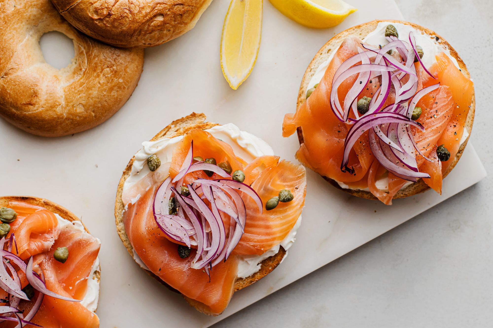

Salmon Bagel

Starting with smoked salmon, this bagel sandwich is layered with tasty ingredients—flavored cream cheese, capers, and purple onion. It's a quick fix for a brown-bag lunch.
ingredients
- 1 pumpernickel or plain bagel (6 oz.)
- 2 tablespoons chive cream cheese
- 1/3 cup thinly sliced English cucumber
- 3 ounces thin-sliced smoked salmon
- 3 thin rings red onion
- 1/2 teaspoon drained capers
Steps
- Split bagel in half horizontally. Spread cut sides with cream cheese on 1 bagel half.
- Layer cucumber, smoked salmon, red onion, and capers.
- Set remaining bagel half, cream cheese side down, over filling.